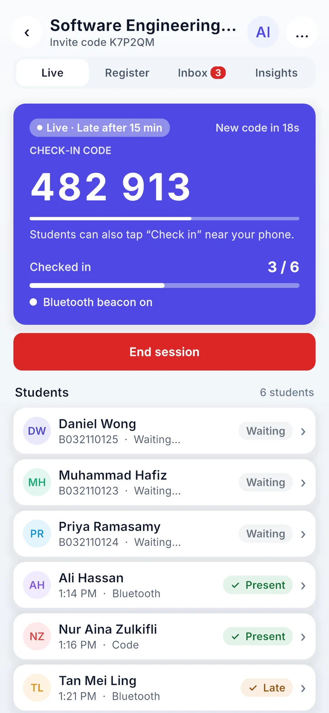
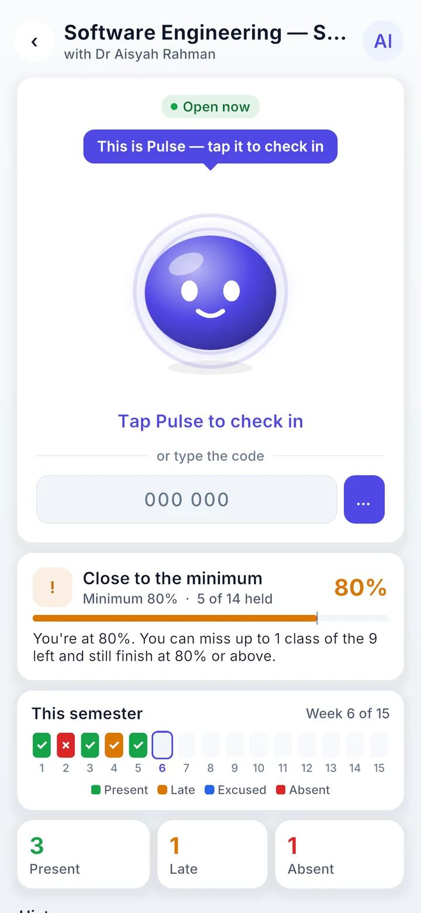
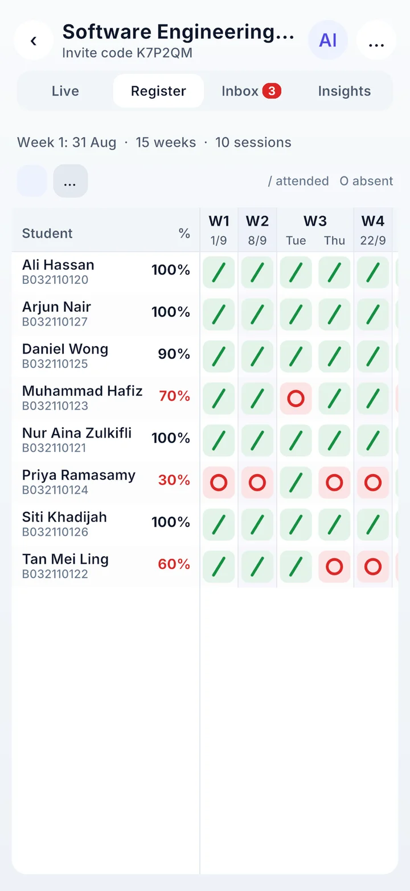

Pulse: Attendance App
An Android attendance app for university classes. Students check in with one tap on Pulse, a smiling mascot, and the lecturer’s phone proves they are really in the room using Bluetooth. Built solo for MITM5423 Mobile App Development in my Master’s at UTeM.



Pulse in 50 seconds
The problem
I approached 5 lecturers and interviewed 3. Taking attendance cost them 5–10 minutes per class with paper sheets, name calling or self-marking, and friends signing in for absent students (“buddy punching”) was a real issue.
The admin after class turned out to be just as painful: absences tracked by hand for warning letters, and medical certificates arriving scattered across Telegram, WhatsApp, email and paper. Every lecturer also wanted a manual override for students with a flat battery or no internet.
The solution: Bluetooth proof of presence
The lecturer’s phone broadcasts a Bluetooth token that changes every 10 seconds, and the server checks it before recording a check-in, so a screenshot or a code forwarded on WhatsApp doesn’t work. I rejected GPS because indoors it can’t tell neighbouring rooms apart.
If Bluetooth fails, students can type a 6-digit code, and the lecturer can always mark someone by hand.
What it does
Lecturers get a live session with a rotating code and a roster that fills in as students arrive, a week-by-week register with attendance percentages and warning flags, PDF and Excel export, an inbox for join requests and excuse letters with the MC attached, and insights on who is below the minimum.
An AI assistant (Google Gemini, called through a server function) writes class summaries and drafts messages to students. Names and matric numbers are swapped for S1, S2… before anything is sent, and no API key is stored in the app.
Polish
Spring animations, screens that grow out of the card you tapped, Undo instead of “Are you sure?” pop-ups, haptics, a custom typing caret, a keyboard that never covers a field, and a Pulse mascot whose mood changes: sleepy, ready, celebrating or late.
Under the hood
The UI is built entirely in code in Unity 6 (C#) for Android. A native Java plugin handles the Bluetooth beacon and scanning, fingerprint sign-in, file picking and the keyboard. Supabase provides PostgreSQL with row-level security, auth, storage and the AI edge function. Check-ins are verified in server functions with HMAC tokens and TOTP codes, so a modified app can’t fake attendance.
Next: v2.0 (in progress)
Built after v1.0 and not yet tested on phones: one session per day per class, an offline mode where student phones save the Bluetooth proof and upload it later, an activity score with streaks, a top-10 leaderboard and badges. Points never affect marks.
How I used AI
Pulse was built with AI assistance (Claude). The ideas, decisions and testing were mine, and I reviewed every code suggestion before accepting it.